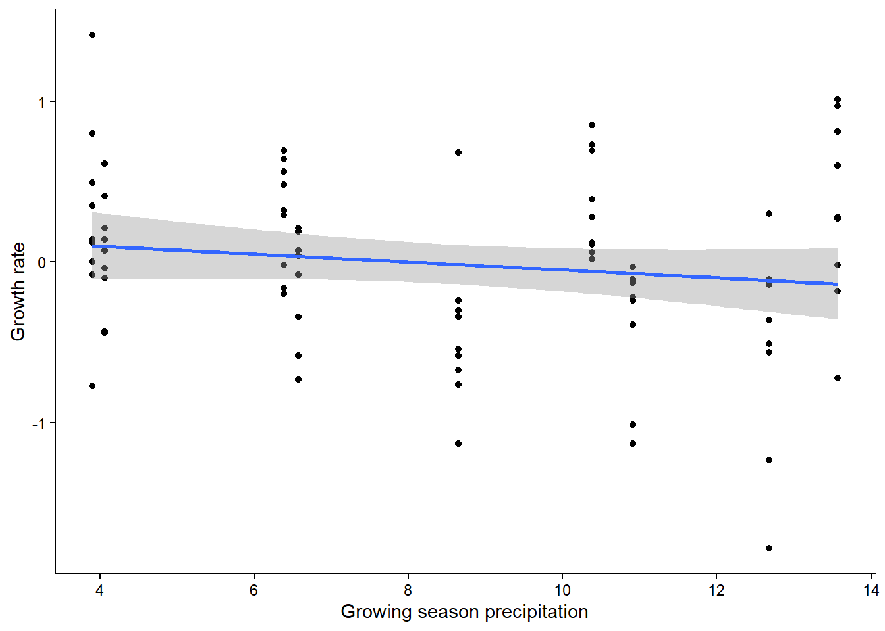
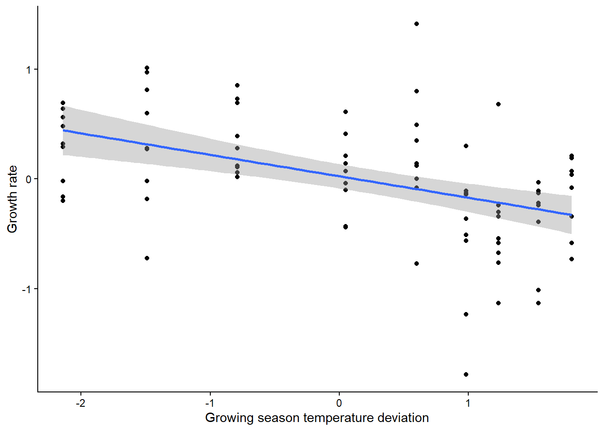

In this lesson, you will tackle a test that can be used when you have two continuous variables: linear regression. We will work with a plant cover data set that looks at climate variables as possible predictors of native plant cover.
In this first section, we will individually test the effect of mean temperature and maximum temperature on the cover of native plant species. To begin, we will build and visualize the models.
First, load the data set. Be sure your working directory is set correctly.
plant <- read.csv("PlantSumm.csv")For now, we’ll build three models: the null model, an alternative model for mean temperature, and an alternative model for maximum temperature.
plant_null <- lm(tot_cover ~ 1, plant)
plant_mean <- lm(tot_cover ~ Mean_tempC, plant)
plant_max <- lm(tot_cover ~ Max_tempC, plant)To view the output of your models, type the name of each model. Just like when we have worked with this model before, the null model will have just an intercept, and the alternative model will have a intercept and a slope term for the effect of either mean or maximum temperature on plant cover.
Now, let’s create graphs to visualize our data. Because we have two
continuous variables, a scatterplot is a good option. We will also
include a best fit line based on our alternative model. We’ll make two
graphs, one for each of our independent variables. If you haven’t
already, load the ggplot2 package first.
library(ggplot2)
ggplot(plant, aes(x=Mean_tempC, y=tot_cover)) +
geom_point() +
geom_smooth(method="lm")+
labs(x="Mean temperature (C)", y="Total plant cover") +
theme_classic()
ggplot(plant, aes(x=Max_tempC, y=tot_cover)) +
geom_point() +
geom_smooth(method="lm")+
labs(x="Max temperature (C)", y="Total plant cover") +
theme_classic()
Let’s again start by analyzing the models using a frequentist approach. We don’t actually need to run any additional tests for this. We can just look at some additional output from the models we already ran.
To view the additional output, use the summary
function.
summary(plant_mean)##
## Call:
## lm(formula = tot_cover ~ Mean_tempC, data = plant)
##
## Residuals:
## Min 1Q Median 3Q Max
## -21.707 -13.027 4.722 10.964 21.556
##
## Coefficients:
## Estimate Std. Error t value Pr(>|t|)
## (Intercept) 40.812 4.359 9.362 1.42e-06 ***
## Mean_tempC -2.451 3.993 -0.614 0.552
## ---
## Signif. codes: 0 '***' 0.001 '**' 0.01 '*' 0.05 '.' 0.1 ' ' 1
##
## Residual standard error: 15.47 on 11 degrees of freedom
## (6 observations deleted due to missingness)
## Multiple R-squared: 0.03311, Adjusted R-squared: -0.05479
## F-statistic: 0.3767 on 1 and 11 DF, p-value: 0.5518summary(plant_max)##
## Call:
## lm(formula = tot_cover ~ Max_tempC, data = plant)
##
## Residuals:
## Min 1Q Median 3Q Max
## -26.058 -7.017 3.003 7.405 19.695
##
## Coefficients:
## Estimate Std. Error t value Pr(>|t|)
## (Intercept) 41.846 3.913 10.695 3.76e-07 ***
## Max_tempC -6.526 3.583 -1.821 0.0958 .
## ---
## Signif. codes: 0 '***' 0.001 '**' 0.01 '*' 0.05 '.' 0.1 ' ' 1
##
## Residual standard error: 13.79 on 11 degrees of freedom
## (6 observations deleted due to missingness)
## Multiple R-squared: 0.2317, Adjusted R-squared: 0.1618
## F-statistic: 3.317 on 1 and 11 DF, p-value: 0.09585When you view the output, you will see a number of things. First, you will be able to see the the formula you used to build the models. Then you will see some information on the distribution of the residuals (the leftover variation not explained by your model). Next, you will see the coefficients from your model, along with standard error of the estimates. The coefficients section will also show you t-values and p-values for each coefficient. These are one-sample t-tests comparing the value of the coefficient to zero.
The information we really want for our linear regression test is down at the very bottom. In the final section, you will see some R-squared values. These are a measure of how much variation in your dependent variable is explained by your independent variable (we will talk about this more in class). Below that, you will see the output of the linear regression test. First is the F-statistic (the same statistic that was calculated for the ANOVA). Then you will see the p-value. Based on these values, would your reject or accept the null hypothesis? What does this tell you about the effect of temperature on plant growth?
Next we will use a likelihood-based approach to test the same
question. Once again, the approach is the same as what you used for the
t-test and ANOVA, using the AIC function to compare the
models. Since we have three models, we can include all three in the AIC
function and then compare the AIC from both the plant_mean and plant_max
models to the null model.
AIC(plant_null, plant_mean, plant_max)## df AIC
## plant_null 2 110.3634
## plant_mean 3 111.9256
## plant_max 3 108.9372Based on this output, what would you conclude about the effect of mean and maximum temperature on plant growth?